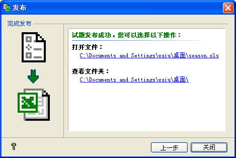
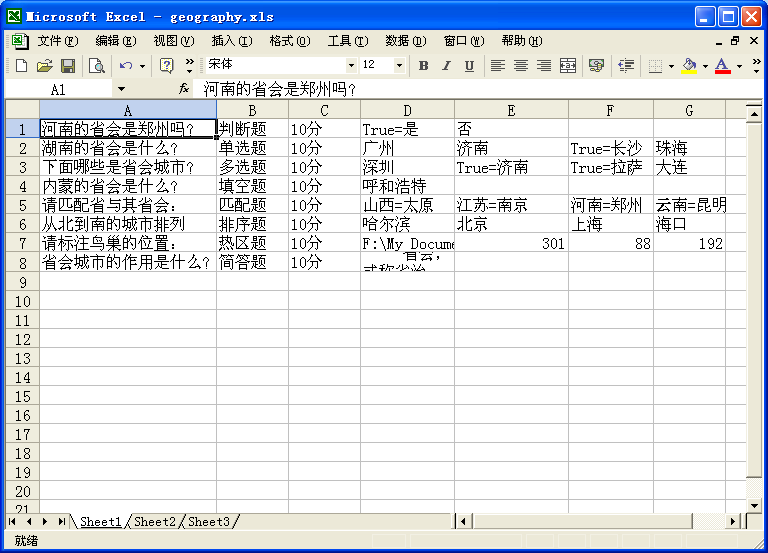

| 试题发布 - 导出Excel |
|
Excel发布模式结果页面如下图所示：  此种模式，试题大师将在指定位置生成一个设定文件名的xls格式的Excel文档。 Ø 路径设置 文件名：您可以设定所要输出的文件名，默认为当前工程名。需要注意的是，它不支持非法的文件名字符如*、?、<、>等。 位置：此处设置您要输出文件的位置，它会记录最后一次设定的位置，作为新建试题的初始设置。 特别提示：导出的Excel是以指定格式导出的，每一个试题生成一行记录，而每个题型的记录又不尽相同，如下所示：  文档的 第1列是试题的题目，第2列是题型，第3列是分值，第4列以后是答案。而答案根据题型不同，其格式也不相同，如下说明： 判断题、单选题、多选题：正确答案的格式是True=加上正确答案，错误答案则是答案本身； 填空题：其答案列为每个可接受答案； 匹配题：其格式为选项=匹配项，每项目占一列； 排序题：其答案列为正确的答案列表； 热区题：第4列为热区图片路径，第5列为热区的左边距，第6列为热区上边距，第7列为热区宽度，第8列为热区高度，以象素为单位。 简答题：其只有一个答案列第4列，为参考答案。 在试题大师的[从Excel导入...]功能中，所需要的试题Excel文档格式与导出的类似，其在题型及分值列又灵活一些。其中题型可接受两种格式如"判断题"或"判断"等；分值列可接受的两种格式如"10分"或"10"等。 导入的试题数量最多只能500题，且题及答案列数不超过12列。 |